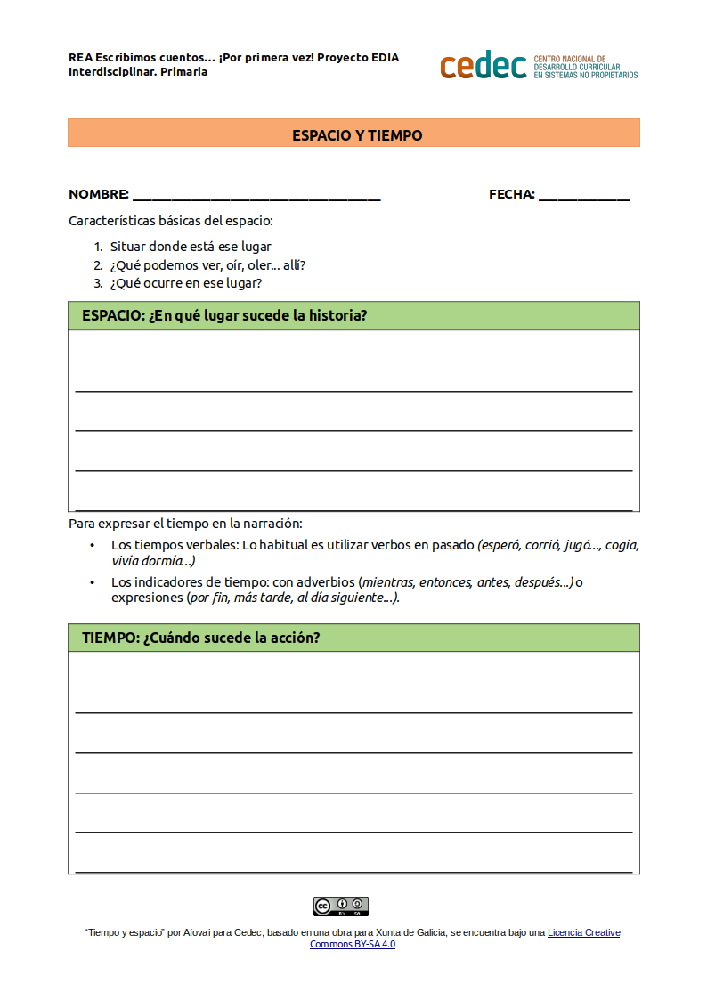

El espacio y el tiempo
ACTIVIDAD: Definimos las características básicas del espacio y del tiempo en el que sucede la acción
- Duración:
- 60 a 120 min
- Agrupamiento:
- Individual
De forma individual el alumnado reflexionará, guiado por la persona docente, sobre los aspectos presentados. Definirá el espacio y el tiempo en el que sucede la acción de su historia y lo registrará ayudándose del modelo propuesto a continuación.
- El espacio
-
Las características básicas del espacio son:
- Situar dónde está ese lugar.
- ¿Qué podemos ver, oír, oler... allí?
- ¿Qué ocurre en ese lugar?
Debemos considerar el espacio físico donde se desarrolla la narración (en un bosque, en una ciudad, etc.); o el espacio psicológico que se refiere al ambiente que crean los personajes de acuerdo a como ellos se sienten (tristeza, esperanza, desilusión, etc.) y por último el espacio social, es decir, el momento referido a la historia del mundo en el que se desarrolla la narración (actualidad, prehistoria, etc.).
- El tiempo
-
Para expresar el tiempo en la narración empleamos:
- Los tiempos verbales: lo habitual es utilizar verbos en pasado (esperó, corrió, jugó..., cogía, vivía, dormía..)
- Los indicadores de tiempo: con adverbios (mientras, entonces, antes, después...) o expresiones (por fin, más tarde, al día siguiente...).
- Modelo para la definición del espacio y el tiempo
-
Entregamos este modelo al alumnado para la definición del espacio y del tiempo, teniendo en cuenta que es posible su adaptación previa por parte de la persona docente con el software LibreOffice Writer.
- Modelo de plantilla para trabajar el espacio y el tiempo (descargar en formato editable odt y en pdf).

- Para saber más sobre el tiempo en la narración
-
- Cruz I. Literatura y comunicación: El espacio y el tiempo en la Narración [Internet]. Literatura y comunicación. 2011 [citado 12 de mayo de 2017]. Disponible en: http://lenguajemedia.blogspot.com.es/2011/05/el-espacio-y-el-tiempo-en-la-narracion.html
- profejsegovia. Tiempo y espacio en la narración literaria [Internet]. 11:01:13 UTC [citado 12 de mayo de 2017]. Disponible en: https://es.slideshare.net/profejsegovia/tiempo-y-espacio-en-la-narracin-literaria
- ESPACIO Y TIEMPO [Internet]. La narración. 2010 [citado 12 de mayo de 2017]. Disponible en: https://anarracionamparo.wordpress.com/elementos/espacio-y-tiempo/
- Tiempo y espacio en la narración [Internet]. Scribd. [citado 12 de mayo de 2017]. Disponible en: https://www.scribd.com/doc/54570566/Tiempo-y-espacio-en-la-narracion
- Jorge Castillo. Elementos de la narración [Internet]. Educación presentado en; 03:42:27 UTC [citado 12 de mayo de 2017]. Disponible en: https://es.slideshare.net/jorgecastillo71mm/elementos-de-la-narracin-54980315
Obra publicada con Licencia Creative Commons Reconocimiento Compartir igual 4.0